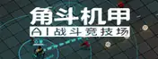
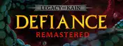
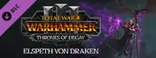

STEAM STORE DATA
价格与活动以商店页面为准
| # | 游戏 / GAME | 当前价格 | 折扣 | 已记录最低 | 玩家测评 | 购买区域限制 | 当前在线 | 商店链接 |
|---|---|---|---|---|---|---|---|---|
| 01 | WRC 8 FIA World Rally ChampionshipAPP / 1004750 | ¥9.00 |
-90% | ¥9.00↘ 已记录史低 | 多半好评此游戏的 565 篇用户评测中有 70% 为好评 | 国区可购区域说明商店未披露跨区激活或赠送限制，购买前请确认商品页。 |
—峰值 — | 商店 |
| 02 | ¥3.49 |
-90% | ¥3.49↘ 已记录史低 | 特别好评此游戏的 5786 篇用户评测中有 81% 为好评 | 国区可购区域说明商店未披露跨区激活或赠送限制，购买前请确认商品页。 |
—峰值 — | 商店 | |
| 03 | Tavern MasterAPP / 1525700 | ¥6.24 |
-87% | ¥6.24↘ 已记录史低 | 特别好评此游戏的 924 篇用户评测中有 87% 为好评 | 国区可购区域说明商店未披露跨区激活或赠送限制，购买前请确认商品页。 |
—峰值 — | 商店 |
| 04 | 机械迷城 (Machinarium)APP / 40700 | ¥12.90 |
-85% | ¥12.90↘ 已记录史低 | 好评如潮此游戏的 4475 篇用户评测中有 95% 为好评 | 国区可购区域说明商店未披露跨区激活或赠送限制，购买前请确认商品页。 |
—峰值 — | 商店 |
| 05 | ¥16.65 |
-85% | ¥16.65↘ 已记录史低 | 多半好评此游戏的 24255 篇用户评测中有 78% 为好评 | 国区可购区域说明商店未披露跨区激活或赠送限制，购买前请确认商品页。 |
—峰值 — | 商店 | |
| 06 | 双点校园APP / 1649080 | ¥29.70 |
-85% | ¥29.70↘ 已记录史低 | 特别好评此游戏的 1449 篇用户评测中有 84% 为好评 | 国区可购区域说明商店未披露跨区激活或赠送限制，购买前请确认商品页。 |
—峰值 — | 商店 |
| 07 | ¥29.60 |
-80% | ¥ 29.60↘ 已记录史低 | 多半好评此游戏的 7120 篇用户评测中有 79% 为好评 | 国区可购区域说明商店未披露跨区激活或赠送限制，购买前请确认商品页。 |
—峰值 — | 商店 | |
| 08 | ¥41.60 |
-80% | ¥41.60↘ 已记录史低 | 多半好评此游戏的 22354 篇用户评测中有 72% 为好评 | 国区可购 · 有限制区域说明Purchases made in this region will only receive the Russian, simplified Chinese and English (Audio only) languages. |
—峰值 — | 商店 | |
| 09 | 新枪弹辩驳V3 大家自相残杀的新学期APP / 567640 | ¥40.00 |
-80% | ¥40.00↘ 已记录史低 | 多半好评此游戏的 7443 篇用户评测中有 71% 为好评 | 国区可购区域说明商店未披露跨区激活或赠送限制，购买前请确认商品页。 |
—峰值 — | 商店 |
| 10 | Transport Fever 2APP / 1066780 | ¥27.20 |
-80% | ¥27.20↘ 已记录史低 | 特别好评此游戏的 3822 篇用户评测中有 89% 为好评 | 国区可购区域说明商店未披露跨区激活或赠送限制，购买前请确认商品页。 |
—峰值 — | 商店 |
| 11 | ¥39.60 |
-80% | ¥39.60↘ 已记录史低 | 特别好评此游戏的 1717 篇用户评测中有 89% 为好评 | 国区可购区域说明商店未披露跨区激活或赠送限制，购买前请确认商品页。 |
—峰值 — | 商店 | |
| 12 | ¥59.60 |
-80% | ¥59.60↘ 已记录史低 | 特别好评此游戏的 3992 篇用户评测中有 85% 为好评 | 国区可购区域说明商店未披露跨区激活或赠送限制，购买前请确认商品页。 |
—峰值 — | 商店 | |
| 13 | 勇者斗恶龙 怪物仙境3 魔族王子与精灵的旅程APP / 2175540 | ¥49.60 |
-80% | ¥49.60↘ 已记录史低 | 多半好评此游戏的 1288 篇用户评测中有 71% 为好评 | 国区可购区域说明商店未披露跨区激活或赠送限制，购买前请确认商品页。 |
—峰值 — | 商店 |
| 14 | 人中之龙7外传 无名之龙APP / 2375550 | ¥45.80 |
-80% | ¥45.80↘ 已记录史低 | 特别好评此游戏的 1408 篇用户评测中有 91% 为好评 | 国区可购区域说明商店未披露跨区激活或赠送限制，购买前请确认商品页。 |
—峰值 — | 商店 |
| 15 | ¥23.24 |
-75% | ¥23.24↘ 已记录史低 | 好评如潮此游戏的 53036 篇用户评测中有 96% 为好评 | 国区可购区域说明商店未披露跨区激活或赠送限制，购买前请确认商品页。 |
64,401峰值 73,970 | 商店 | |
| 16 | ¥23.24 |
-75% | ¥23.24↘ 已记录史低 | 特别好评此游戏的 5383 篇用户评测中有 94% 为好评 | 国区可购区域说明商店未披露跨区激活或赠送限制，购买前请确认商品页。 |
—峰值 — | 商店 | |
| 17 | ¥74.50 |
-75% | ¥74.50↘ 已记录史低 | 特别好评此游戏的 1960 篇用户评测中有 80% 为好评 | 国区可购区域说明商店未披露跨区激活或赠送限制，购买前请确认商品页。 |
—峰值 — | 商店 | |
| 18 | ¥19.00 |
-75% | ¥ 17.00 | 特别好评此游戏的 6170 篇用户评测中有 92% 为好评 | 国区可购区域说明商店未披露跨区激活或赠送限制，购买前请确认商品页。 |
—峰值 — | 商店 | |
| 19 | Call to Arms - Gates of Hell: OstfrontAPP / 400750 | ¥32.00 |
-75% | ¥32.00↘ 已记录史低 | 多半好评此游戏的 5568 篇用户评测中有 79% 为好评 | 国区可购区域说明商店未披露跨区激活或赠送限制，购买前请确认商品页。 |
—峰值 — | 商店 |
| 20 | 友尽高尔夫APP / 431240 | ¥27.50 |
-75% | ¥17.50 | 特别好评此游戏的 250 篇用户评测中有 80% 为好评 | 国区可购区域说明商店未披露跨区激活或赠送限制，购买前请确认商品页。 |
—峰值 — | 商店 |
| 21 | Tropico 6APP / 492720 | ¥56.00 |
-75% | ¥56.00↘ 已记录史低 | 特别好评此游戏的 1677 篇用户评测中有 85% 为好评 | 国区可购区域说明商店未披露跨区激活或赠送限制，购买前请确认商品页。 |
—峰值 — | 商店 |
| 22 | 双点医院APP / 535930 | ¥49.50 |
-75% | ¥ 39.50 | 特别好评此游戏的 6917 篇用户评测中有 90% 为好评 | 国区可购区域说明商店未披露跨区激活或赠送限制，购买前请确认商品页。 |
—峰值 — | 商店 |
| 23 | Golf It!APP / 571740 | ¥8.50 |
-75% | ¥8.50↘ 已记录史低 | 特别好评此游戏的 24798 篇用户评测中有 90% 为好评 | 国区可购区域说明商店未披露跨区激活或赠送限制，购买前请确认商品页。 |
—峰值 — | 商店 |
| 24 | Sonic ManiaAPP / 584400 | ¥30.00 |
-75% | ¥ 30.00↘ 已记录史低 | 特别好评此游戏的 24567 篇用户评测中有 94% 为好评 | 国区可购区域说明商店未披露跨区激活或赠送限制，购买前请确认商品页。 |
—峰值 — | 商店 |
| 25 | ¥67.00 |
-75% | ¥67.00↘ 已记录史低 | 特别好评此游戏的 13899 篇用户评测中有 91% 为好评 | 国区可购区域说明商店未披露跨区激活或赠送限制，购买前请确认商品页。 |
—峰值 — | 商店 | |
| 26 | Clone Drone in the Danger ZoneAPP / 597170 | ¥17.50 |
-75% | ¥17.50↘ 已记录史低 | 好评如潮此游戏的 4207 篇用户评测中有 95% 为好评 | 国区可购区域说明商店未披露跨区激活或赠送限制，购买前请确认商品页。 |
—峰值 — | 商店 |
| 27 | Hobo: Tough LifeAPP / 632300 | ¥27.00 |
-75% | ¥27.00↘ 已记录史低 | 特别好评此游戏的 3209 篇用户评测中有 81% 为好评 | 国区可购区域说明商店未披露跨区激活或赠送限制，购买前请确认商品页。 |
—峰值 — | 商店 |
| 28 |  GLADIABOTS - AI Combat ArenaAPP / 871930 |
¥14.50 |
-75% | ¥14.50↘ 已记录史低 | 特别好评此游戏的 853 篇用户评测中有 86% 为好评 | 国区可购区域说明商店未披露跨区激活或赠送限制，购买前请确认商品页。 |
—峰值 — | 商店 |
| 29 | 索尼克 未知边境APP / 1237320 | ¥49.50 |
-75% | ¥49.50↘ 已记录史低 | 特别好评此游戏的 428 篇用户评测中有 80% 为好评 | 国区可购区域说明商店未披露跨区激活或赠送限制，购买前请确认商品页。 |
—峰值 — | 商店 |
| 30 | THE KING OF FIGHTERS XVAPP / 1498570 | ¥27.00 |
-75% | ¥27.00↘ 已记录史低 | 特别好评此游戏的 2210 篇用户评测中有 80% 为好评 | 国区可购区域说明商店未披露跨区激活或赠送限制，购买前请确认商品页。 |
—峰值 — | 商店 |
| 31 | Call to Arms - Gates of Hell: TalvisotaAPP / 1911520 | ¥19.00 |
-75% | ¥19.00↘ 已记录史低 | 多半好评此游戏的 619 篇用户评测中有 76% 为好评 | 国区可购区域说明商店未披露跨区激活或赠送限制，购买前请确认商品页。 |
—峰值 — | 商店 |
| 32 | ¥47.25 |
-75% | ¥47.25↘ 已记录史低 | 特别好评此游戏的 2047 篇用户评测中有 91% 为好评 | 国区可购区域说明商店未披露跨区激活或赠送限制，购买前请确认商品页。 |
—峰值 — | 商店 | |
| 33 | 海藤正治事件簿APP / 2060280 | ¥43.50 |
-75% | ¥43.50↘ 已记录史低 | 特别好评此游戏的 713 篇用户评测中有 87% 为好评 | 国区可购区域说明商店未披露跨区激活或赠送限制，购买前请确认商品页。 |
—峰值 — | 商店 |
| 34 | Call to Arms - Gates of Hell: Scorched EarthAPP / 2123890 | ¥14.50 |
-75% | ¥14.50↘ 已记录史低 | 多半好评此游戏的 457 篇用户评测中有 72% 为好评 | 国区可购区域说明商店未披露跨区激活或赠送限制，购买前请确认商品页。 |
—峰值 — | 商店 |
| 35 | ¥34.75 |
-75% | ¥34.75↘ 已记录史低 | 特别好评此游戏的 5644 篇用户评测中有 91% 为好评 | 国区可购区域说明商店未披露跨区激活或赠送限制，购买前请确认商品页。 |
—峰值 — | 商店 | |
| 36 | ¥27.00 |
-75% | ¥27.00↘ 已记录史低 | 多半好评此游戏的 1098 篇用户评测中有 72% 为好评 | 国区可购区域说明商店未披露跨区激活或赠送限制，购买前请确认商品页。 |
—峰值 — | 商店 | |
| 37 | ¥57.25 |
-75% | ¥57.25↘ 已记录史低 | 特别好评此游戏的 210 篇用户评测中有 93% 为好评 | 国区可购区域说明商店未披露跨区激活或赠送限制，购买前请确认商品页。 |
—峰值 — | 商店 | |
| 38 | 人中之龙８外传 Pirates in HawaiiAPP / 3061810 | ¥67.00 |
-75% | ¥67.00↘ 已记录史低 | 特别好评此游戏的 847 篇用户评测中有 81% 为好评 | 国区可购区域说明商店未披露跨区激活或赠送限制，购买前请确认商品页。 |
—峰值 — | 商店 |
| 39 | ¥59.40 |
-70% | ¥59.40↘ 已记录史低 | 多半好评此游戏的 33852 篇用户评测中有 79% 为好评 | 国区可购区域说明商店未披露跨区激活或赠送限制，购买前请确认商品页。 |
—峰值 — | 商店 | |
| 40 | ¥32.40 |
-70% | ¥32.40↘ 已记录史低 | 好评如潮此游戏的 2702 篇用户评测中有 98% 为好评 | 国区可购区域说明商店未披露跨区激活或赠送限制，购买前请确认商品页。 |
—峰值 — | 商店 | |
| 41 | 女神异闻录4 无敌究极后桥背摔APP / 1602010 | ¥47.70 |
-70% | ¥47.70↘ 已记录史低 | 特别好评此游戏的 441 篇用户评测中有 90% 为好评 | 国区可购区域说明商店未披露跨区激活或赠送限制，购买前请确认商品页。 |
—峰值 — | 商店 |
| 42 | ¥80.40 |
-70% | ¥80.40↘ 已记录史低 | 好评如潮此游戏的 35258 篇用户评测中有 95% 为好评 | 国区可购区域说明商店未披露跨区激活或赠送限制，购买前请确认商品页。 |
—峰值 — | 商店 | |
| 43 | 祝你好死APP / 1740720 | ¥30.00 |
-70% | ¥30.00↘ 已记录史低 | 多半好评此游戏的 1635 篇用户评测中有 72% 为好评 | 国区可购区域说明商店未披露跨区激活或赠送限制，购买前请确认商品页。 |
—峰值 — | 商店 |
| 44 | 索尼克 起源APP / 1794960 | ¥53.70 |
-70% | ¥53.70↘ 已记录史低 | 多半好评此游戏的 5478 篇用户评测中有 77% 为好评 | 国区可购区域说明商店未披露跨区激活或赠送限制，购买前请确认商品页。 |
—峰值 — | 商店 |
| 45 | ¥80.40 |
-70% | ¥80.40↘ 已记录史低 | 特别好评此游戏的 1972 篇用户评测中有 87% 为好评 | 国区可购区域说明商店未披露跨区激活或赠送限制，购买前请确认商品页。 |
—峰值 — | 商店 | |
| 46 | 女神异闻录５ 战略版APP / 2254740 | ¥80.40 |
-70% | ¥80.40↘ 已记录史低 | 多半好评此游戏的 1557 篇用户评测中有 74% 为好评 | 国区可购区域说明商店未披露跨区激活或赠送限制，购买前请确认商品页。 |
—峰值 — | 商店 |
| 47 |  Legacy of Kain: Defiance RemasteredAPP / 3747730 |
¥27.00 |
-70% | ¥27.00↘ 已记录史低 | 好评如潮此游戏的 698 篇用户评测中有 96% 为好评 | 国区可购区域说明商店未披露跨区激活或赠送限制，购买前请确认商品页。 |
—峰值 — | 商店 |
| 48 | 天国：拯救2APP / 1771300 | ¥75.24 |
-67% | ¥75.24↘ 已记录史低 | 特别好评此游戏的 31773 篇用户评测中有 92% 为好评 | 国区可购区域说明商店未披露跨区激活或赠送限制，购买前请确认商品页。 |
14,655峰值 15,698 | 商店 |
| 49 | Overcooked! 2APP / 728880 | ¥33.32 |
-66% | ¥ 24.50 | 特别好评此游戏的 28561 篇用户评测中有 86% 为好评 | 国区可购区域说明商店未披露跨区激活或赠送限制，购买前请确认商品页。 |
—峰值 — | 商店 |
| 50 | ¥38.15 |
-65% | ¥38.15↘ 已记录史低 | 特别好评此游戏的 5141 篇用户评测中有 90% 为好评 | 国区可购区域说明商店未披露跨区激活或赠送限制，购买前请确认商品页。 |
—峰值 — | 商店 | |
| 51 | AkaAPP / 1591450 | ¥18.20 |
-65% | ¥18.20↘ 已记录史低 | 多半好评此游戏的 584 篇用户评测中有 74% 为好评 | 国区可购区域说明商店未披露跨区激活或赠送限制，购买前请确认商品页。 |
—峰值 — | 商店 |
| 52 | ¥93.80 |
-65% | ¥93.80↘ 已记录史低 | 特别好评此游戏的 8345 篇用户评测中有 88% 为好评 | 国区可购区域说明商店未披露跨区激活或赠送限制，购买前请确认商品页。 |
—峰值 — | 商店 | |
| 53 | 忍者龟：施莱德的复仇APP / 1361510 | ¥30.40 |
-60% | ¥30.40↘ 已记录史低 | 特别好评此游戏的 1881 篇用户评测中有 88% 为好评 | 国区可购区域说明商店未披露跨区激活或赠送限制，购买前请确认商品页。 |
—峰值 — | 商店 |
| 54 | ¥95.20 |
-60% | ¥95.20↘ 已记录史低 | 特别好评此游戏的 7362 篇用户评测中有 82% 为好评 | 国区可购区域说明商店未披露跨区激活或赠送限制，购买前请确认商品页。 |
—峰值 — | 商店 | |
| 55 | Age of Wonders 4APP / 1669000 | ¥79.20 |
-60% | ¥79.20↘ 已记录史低 | 多半好评此游戏的 1556 篇用户评测中有 74% 为好评 | 国区可购区域说明商店未披露跨区激活或赠送限制，购买前请确认商品页。 |
—峰值 — | 商店 |
| 56 | ¥79.20 |
-60% | ¥79.20↘ 已记录史低 | 特别好评此游戏的 3090 篇用户评测中有 88% 为好评 | 国区可购区域说明商店未披露跨区激活或赠送限制，购买前请确认商品页。 |
—峰值 — | 商店 | |
| 57 | ¥95.20 |
-60% | ¥95.20↘ 已记录史低 | 特别好评此游戏的 1864 篇用户评测中有 82% 为好评 | 国区可购区域说明商店未披露跨区激活或赠送限制，购买前请确认商品页。 |
—峰值 — | 商店 | |
| 58 | Dimhaven - The Lost SourceAPP / 2458980 | ¥73.84 |
-58% | ¥73.84↘ 已记录史低 | 特别好评此游戏的 1020 篇用户评测中有 86% 为好评 | 国区可购区域说明商店未披露跨区激活或赠送限制，购买前请确认商品页。 |
—峰值 — | 商店 |
| 59 | ¥24.75 |
-55% | ¥ 20.64 | 特别好评此游戏的 7665 篇用户评测中有 94% 为好评 | 国区可购区域说明商店未披露跨区激活或赠送限制，购买前请确认商品页。 |
—峰值 — | 商店 | |
| 60 | Euro Truck Simulator 2 - Going East!APP / 227310 | ¥23.64 |
-50% | ¥ 15.90 | 特别好评此游戏的 3112 篇用户评测中有 88% 为好评 | 国区可购区域说明商店未披露跨区激活或赠送限制，购买前请确认商品页。 |
—峰值 — | 商店 |
| 61 | ¥70.50 |
-50% | ¥ 35.00 | 特别好评此游戏的 2718 篇用户评测中有 80% 为好评 | 国区可购区域说明商店未披露跨区激活或赠送限制，购买前请确认商品页。 |
—峰值 — | 商店 | |
| 62 | ¥40.99 |
-50% | ¥ 29.40 | 特别好评此游戏的 223 篇用户评测中有 95% 为好评 | 国区可购区域说明商店未披露跨区激活或赠送限制，购买前请确认商品页。 |
—峰值 — | 商店 | |
| 63 | Euro Truck Simulator 2 - Vive la France !APP / 531130 | ¥40.99 |
-50% | ¥ 29.40 | 特别好评此游戏的 1934 篇用户评测中有 91% 为好评 | 国区可购区域说明商店未披露跨区激活或赠送限制，购买前请确认商品页。 |
—峰值 — | 商店 |
| 64 | Euro Truck Simulator 2 - ItaliaAPP / 558244 | ¥40.99 |
-50% | ¥ 29.40 | 特别好评此游戏的 1962 篇用户评测中有 93% 为好评 | 国区可购区域说明商店未披露跨区激活或赠送限制，购买前请确认商品页。 |
—峰值 — | 商店 |
| 65 | 全面战争：战锤2 - 古墓王的崛起APP / 617870 | ¥42.50 |
-50% | ¥ 42.50↘ 已记录史低 | 特别好评此游戏的 1939 篇用户评测中有 83% 为好评 | 国区可购区域说明商店未披露跨区激活或赠送限制，购买前请确认商品页。 |
—峰值 — | 商店 |
| 66 | ¥18.00 |
-50% | ¥18.00↘ 已记录史低 | 多半好评此游戏的 3072 篇用户评测中有 79% 为好评 | 国区可购区域说明商店未披露跨区激活或赠送限制，购买前请确认商品页。 |
—峰值 — | 商店 | |
| 67 | 全面战争：战锤2 - 吸血鬼海岸的诅咒APP / 835670 | ¥42.50 |
-50% | ¥ 42.50↘ 已记录史低 | 多半好评此游戏的 1391 篇用户评测中有 75% 为好评 | 国区可购区域说明商店未披露跨区激活或赠送限制，购买前请确认商品页。 |
—峰值 — | 商店 |
| 68 | Euro Truck Simulator 2 - Beyond the Baltic SeaAPP / 925580 | ¥40.99 |
-50% | ¥ 18.00 | 特别好评此游戏的 2630 篇用户评测中有 90% 为好评 | 国区可购区域说明商店未披露跨区激活或赠送限制，购买前请确认商品页。 |
—峰值 — | 商店 |
| 69 | ¥40.99 |
-50% | ¥ 29.40 | 特别好评此游戏的 3346 篇用户评测中有 86% 为好评 | 国区可购区域说明商店未披露跨区激活或赠送限制，购买前请确认商品页。 |
—峰值 — | 商店 | |
| 70 | 女神异闻录４ 黄金版APP / 1113000 | ¥62.50 |
-50% | ¥62.50↘ 已记录史低 | 好评如潮此游戏的 9240 篇用户评测中有 95% 为好评 | 国区可购区域说明商店未披露跨区激活或赠送限制，购买前请确认商品页。 |
—峰值 — | 商店 |
| 71 | Euro Truck Simulator 2 - IberiaAPP / 1209460 | ¥40.99 |
-50% | ¥40.99↘ 已记录史低 | 多半好评此游戏的 2296 篇用户评测中有 76% 为好评 | 国区可购区域说明商店未披露跨区激活或赠送限制，购买前请确认商品页。 |
—峰值 — | 商店 |
| 72 | Kingdom Rush Vengeance - Tower DefenseAPP / 1367550 | ¥40.00 |
-50% | ¥ 32.00 | 特别好评此游戏的 5673 篇用户评测中有 94% 为好评 | 国区可购区域说明商店未披露跨区激活或赠送限制，购买前请确认商品页。 |
—峰值 — | 商店 |
| 73 | 《渔帆暗涌》APP / 1562430 | ¥89.50 |
-50% | ¥44.00 | 特别好评此游戏的 3239 篇用户评测中有 89% 为好评 | 国区可购区域说明商店未披露跨区激活或赠送限制，购买前请确认商品页。 |
—峰值 — | 商店 |
| 74 | ¥149.00 |
-50% | ¥149.00↘ 已记录史低 | 特别好评此游戏的 8901 篇用户评测中有 83% 为好评 | 国区可购区域说明商店未披露跨区激活或赠送限制，购买前请确认商品页。 |
—峰值 — | 商店 | |
| 75 | 女神异闻录３ 携带版APP / 1809700 | ¥62.50 |
-50% | ¥62.50↘ 已记录史低 | 多半好评此游戏的 500 篇用户评测中有 77% 为好评 | 国区可购区域说明商店未披露跨区激活或赠送限制，购买前请确认商品页。 |
—峰值 — | 商店 |
| 76 | 全面战争：战锤3 - 混沌冠军勇士APP / 1824060 | ¥39.00 |
-50% | ¥39.00↘ 已记录史低 | 多半好评此游戏的 789 篇用户评测中有 70% 为好评 | 国区可购区域说明商店未披露跨区激活或赠送限制，购买前请确认商品页。 |
—峰值 — | 商店 |
| 77 | Euro Truck Simulator 2 - West BalkansAPP / 2004210 | ¥40.99 |
-50% | ¥40.99↘ 已记录史低 | 特别好评此游戏的 1789 篇用户评测中有 85% 为好评 | 国区可购区域说明商店未披露跨区激活或赠送限制，购买前请确认商品页。 |
—峰值 — | 商店 |
| 78 | BALL x PIT — 球比伦战记APP / 2062430 | ¥29.00 |
-50% | ¥29.00↘ 已记录史低 | 特别好评此游戏的 2551 篇用户评测中有 89% 为好评 | 国区可购区域说明商店未披露跨区激活或赠送限制，购买前请确认商品页。 |
—峰值 — | 商店 |
| 79 | Plains of PainAPP / 2218970 | ¥38.00 |
-50% | ¥38.00↘ 已记录史低 | 特别好评此游戏的 1052 篇用户评测中有 84% 为好评 | 国区可购区域说明商店未披露跨区激活或赠送限制，购买前请确认商品页。 |
—峰值 — | 商店 |
| 80 | Thronefall《王权陨落》APP / 2239150 | ¥26.00 |
-50% | ¥26.00↘ 已记录史低 | 好评如潮此游戏的 6538 篇用户评测中有 96% 为好评 | 国区可购区域说明商店未披露跨区激活或赠送限制，购买前请确认商品页。 |
—峰值 — | 商店 |
| 81 | RAIDOU Remastered: 超力兵团奇谭APP / 2288350 | ¥119.00 |
-50% | ¥119.00↘ 已记录史低 | 特别好评此游戏的 1074 篇用户评测中有 93% 为好评 | 国区可购区域说明商店未披露跨区激活或赠送限制，购买前请确认商品页。 |
—峰值 — | 商店 |
| 82 |  全面战争：战锤3 - 衰朽王座 – 埃斯佩斯APP / 2325832 |
¥22.50 |
-50% | ¥22.50↘ 已记录史低 | 特别好评此游戏的 1230 篇用户评测中有 86% 为好评 | 国区可购区域说明商店未披露跨区激活或赠送限制，购买前请确认商品页。 |
—峰值 — | 商店 |
| 83 | Dead by Daylight - Chucky ChapterAPP / 2656010 | ¥11.70 |
-50% | ¥11.70↘ 已记录史低 | 特别好评此游戏的 1137 篇用户评测中有 80% 为好评 | 国区可购区域说明商店未披露跨区激活或赠送限制，购买前请确认商品页。 |
—峰值 — | 商店 |
| 84 | 九王 9 KingsAPP / 2784470 | ¥29.50 |
-50% | ¥29.50↘ 已记录史低 | 多半好评此游戏的 1659 篇用户评测中有 77% 为好评 | 国区可购区域说明商店未披露跨区激活或赠送限制，购买前请确认商品页。 |
—峰值 — | 商店 |
| 85 | 全面战争：战锤3 - 衰朽王座 – 马拉凯APP / 2891710 | ¥22.50 |
-50% | ¥22.50↘ 已记录史低 | 特别好评此游戏的 1080 篇用户评测中有 85% 为好评 | 国区可购区域说明商店未披露跨区激活或赠送限制，购买前请确认商品页。 |
—峰值 — | 商店 |
| 86 | Ambrosia SkyAPP / 3580160 | ¥51.24 |
-50% | ¥51.24↘ 已记录史低 | 特别好评此游戏的 288 篇用户评测中有 88% 为好评 | 国区可购区域说明商店未披露跨区激活或赠送限制，购买前请确认商品页。 |
—峰值 — | 商店 |
| 87 | 仁王３APP / 3681010 | ¥174.00 |
-50% | ¥174.00↘ 已记录史低 | 多半好评此游戏的 4179 篇用户评测中有 74% 为好评 | 国区可购区域说明商店未披露跨区激活或赠送限制，购买前请确认商品页。 |
—峰值 — | 商店 |
| 88 | Call to Arms - Gates of Hell: Finest HourAPP / 3691330 | ¥54.00 |
-50% | ¥54.00↘ 已记录史低 | 多半好评此游戏的 787 篇用户评测中有 70% 为好评 | 国区可购区域说明商店未披露跨区激活或赠送限制，购买前请确认商品页。 |
—峰值 — | 商店 |
| 89 | 人中之龙 极２APP / 3717340 | ¥79.00 |
-50% | ¥79.00↘ 已记录史低 | 特别好评此游戏的 1279 篇用户评测中有 82% 为好评 | 国区可购区域说明商店未披露跨区激活或赠送限制，购买前请确认商品页。 |
—峰值 — | 商店 |
| 90 | 王国保卫战 5：联盟APP / 2849080 | ¥41.80 |
-45% | ¥41.80↘ 已记录史低 | 特别好评此游戏的 6882 篇用户评测中有 87% 为好评 | 国区可购区域说明商店未披露跨区激活或赠送限制，购买前请确认商品页。 |
—峰值 — | 商店 |
| 91 | 可爱冒险记APP / 3840230 | ¥38.50 |
-45% | ¥38.50↘ 已记录史低 | 特别好评此游戏的 864 篇用户评测中有 93% 为好评 | 国区可购区域说明商店未披露跨区激活或赠送限制，购买前请确认商品页。 |
—峰值 — | 商店 |
| 92 | 喇叭之城 (Phonopolis)APP / 1206070 | ¥52.80 |
-40% | ¥52.80↘ 已记录史低 | 特别好评此游戏的 1711 篇用户评测中有 92% 为好评 | 国区可购区域说明商店未披露跨区激活或赠送限制，购买前请确认商品页。 |
—峰值 — | 商店 |
| 93 | 隔离区-丧尸末日生存APP / 1211600 | ¥28.80 |
-40% | ¥28.80↘ 已记录史低 | 特别好评此游戏的 2938 篇用户评测中有 80% 为好评 | 国区可购区域说明商店未披露跨区激活或赠送限制，购买前请确认商品页。 |
—峰值 — | 商店 |
| 94 | Commandos: OriginsAPP / 1479730 | ¥179.40 |
-40% | ¥179.40↘ 已记录史低 | 多半好评此游戏的 1909 篇用户评测中有 79% 为好评 | 国区可购区域说明商店未披露跨区激活或赠送限制，购买前请确认商品页。 |
—峰值 — | 商店 |
| 95 | 绝对魔权APP / 1904480 | ¥52.80 |
-40% | ¥52.80↘ 已记录史低 | 多半好评此游戏的 960 篇用户评测中有 75% 为好评 | 国区可购区域说明商店未披露跨区激活或赠送限制，购买前请确认商品页。 |
—峰值 — | 商店 |
| 96 | 矮人军团自走棋APP / 2205850 | ¥31.20 |
-40% | ¥31.20↘ 已记录史低 | 多半好评此游戏的 985 篇用户评测中有 79% 为好评 | 国区可购区域说明商店未披露跨区激活或赠送限制，购买前请确认商品页。 |
—峰值 — | 商店 |
| 97 | 索尼克赛车 交叉世界APP / 2486820 | ¥118.80 |
-40% | ¥118.80↘ 已记录史低 | 多半好评此游戏的 217 篇用户评测中有 77% 为好评 | 国区可购区域说明商店未披露跨区激活或赠送限制，购买前请确认商品页。 |
—峰值 — | 商店 |
| 98 | 虚空破坏者APP / 2615540 | ¥69.00 |
-40% | ¥69.00↘ 已记录史低 | 特别好评此游戏的 3101 篇用户评测中有 90% 为好评 | 国区可购区域说明商店未披露跨区激活或赠送限制，购买前请确认商品页。 |
—峰值 — | 商店 |
| 99 | Supermarket SimulatorAPP / 2670630 | ¥47.40 |
-40% | ¥47.40↘ 已记录史低 | 多半好评此游戏的 3134 篇用户评测中有 77% 为好评 | 国区可购区域说明商店未披露跨区激活或赠送限制，购买前请确认商品页。 |
—峰值 — | 商店 |
| 100 | 鬼灭之刃 火之神血风谭2APP / 2928600 | ¥107.40 |
-40% | ¥107.40↘ 已记录史低 | 特别好评此游戏的 347 篇用户评测中有 84% 为好评 | 国区可购区域说明商店未披露跨区激活或赠送限制，购买前请确认商品页。 |
—峰值 — | 商店 |
没有找到匹配的游戏，试试其他关键词或折扣。